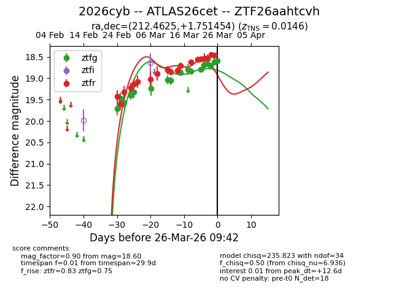
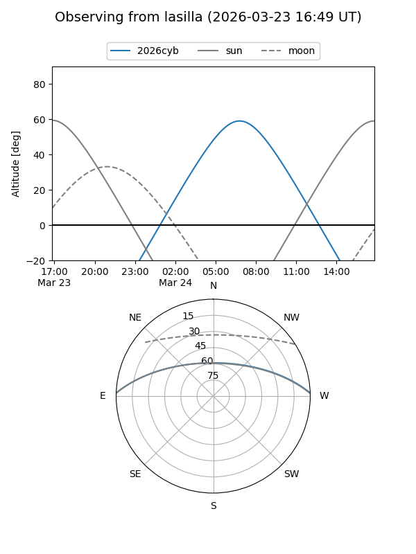
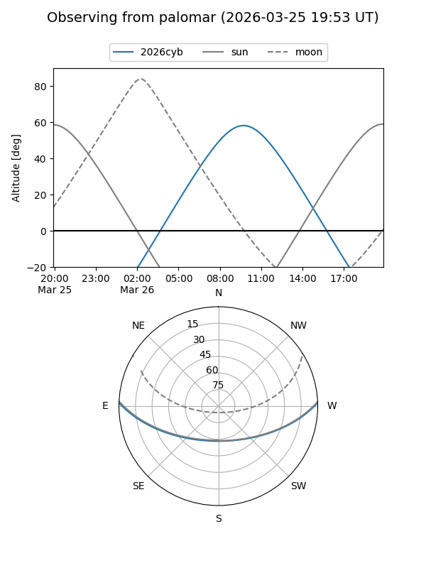
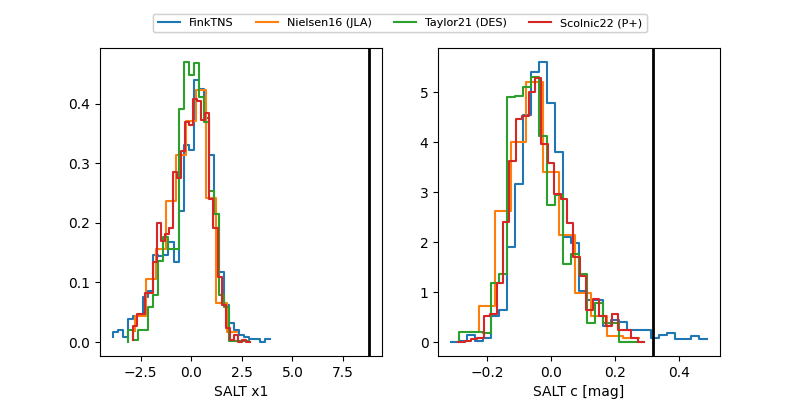

2026cyb
Target 2026cyb at 2026-03-26 09:45
Aliases and brokers:
FINK: link
Lasair: link
ALeRCE: link
TNS: link
YSE: link
alt names
ZTF26aahtcvh (ztf,fink_ztf)
2026cyb (tns,yse)
ATLAS26cet (atlas)
Coordinates:
equatorial (ra, dec) = 212.4625,+1.75145
equatorial (HMS+DMS) = 14:09:50.99,+01:45:05.23
galactic (l, b) = (342.7557,+58.42433)
Flags:
Photometry:
last ztfg=18.60, ztfr=18.46
17 ztfg, 19 ztfr detections
Lightcurve

Visibility


Additional plots
